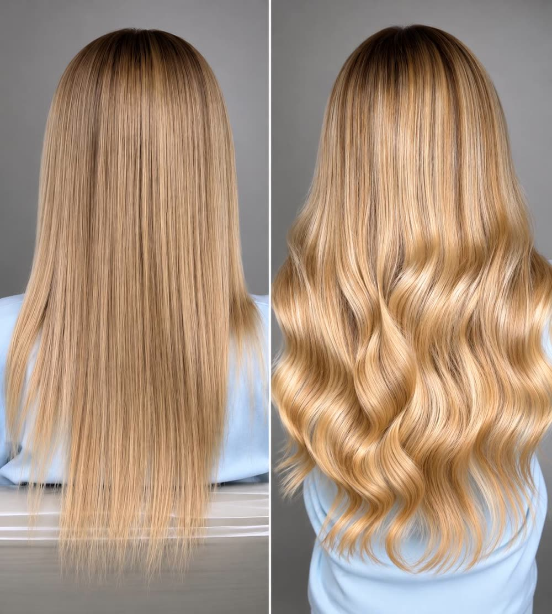
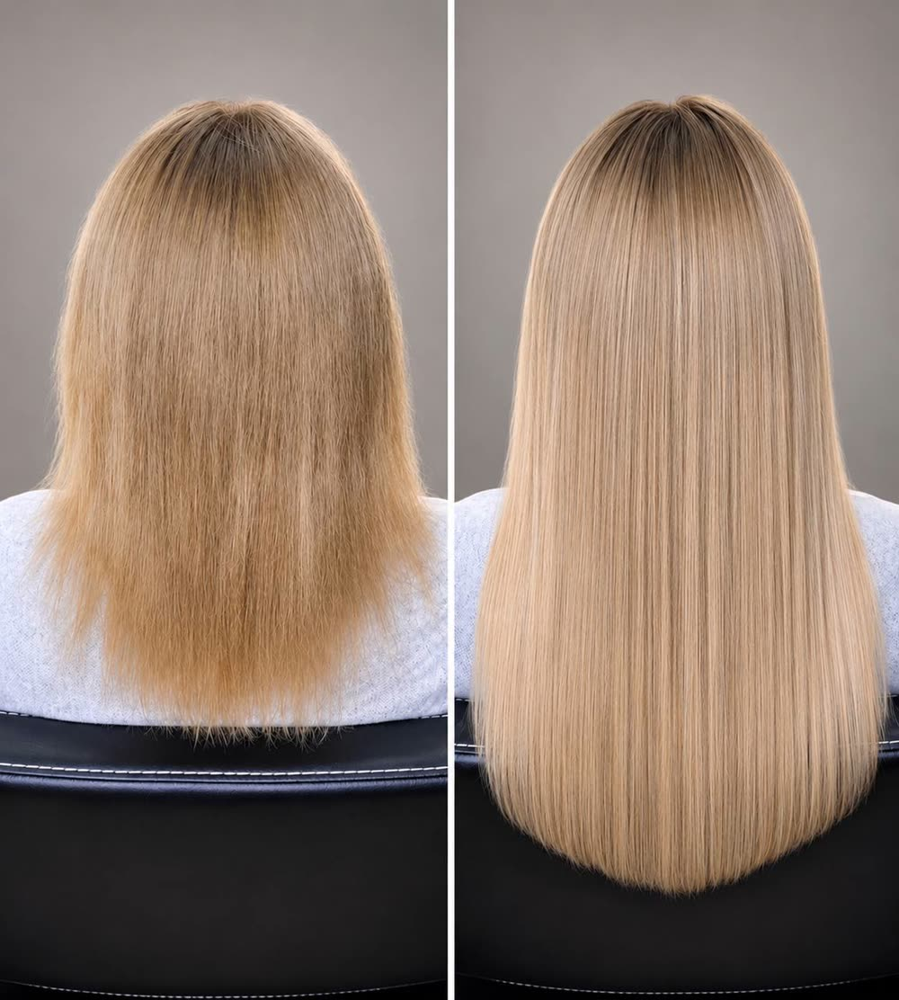
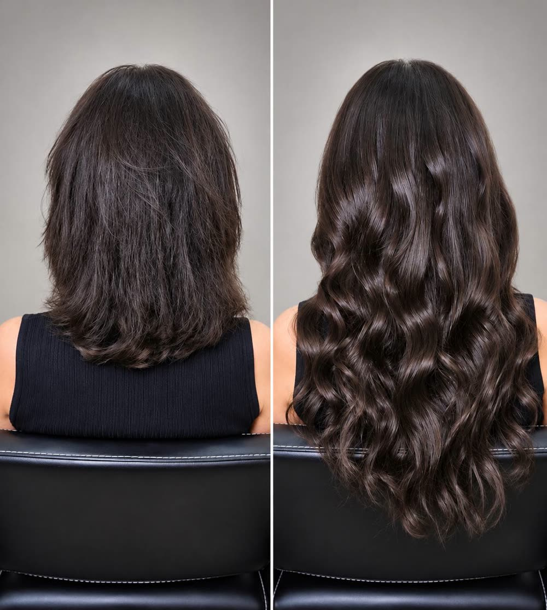
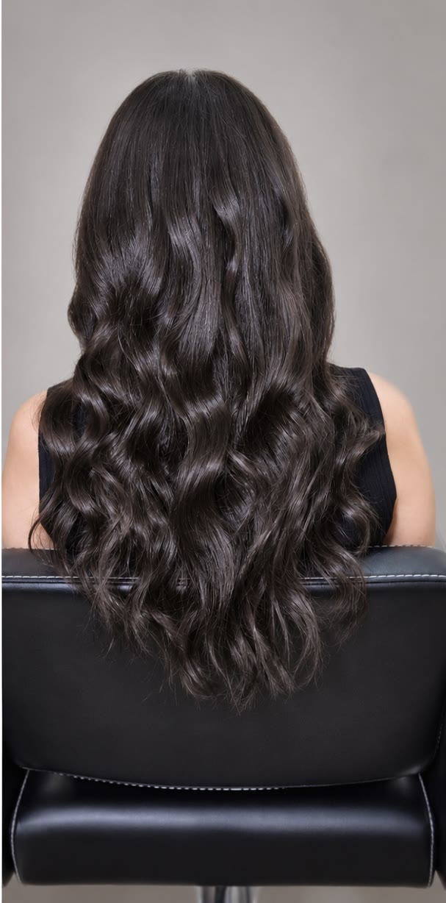
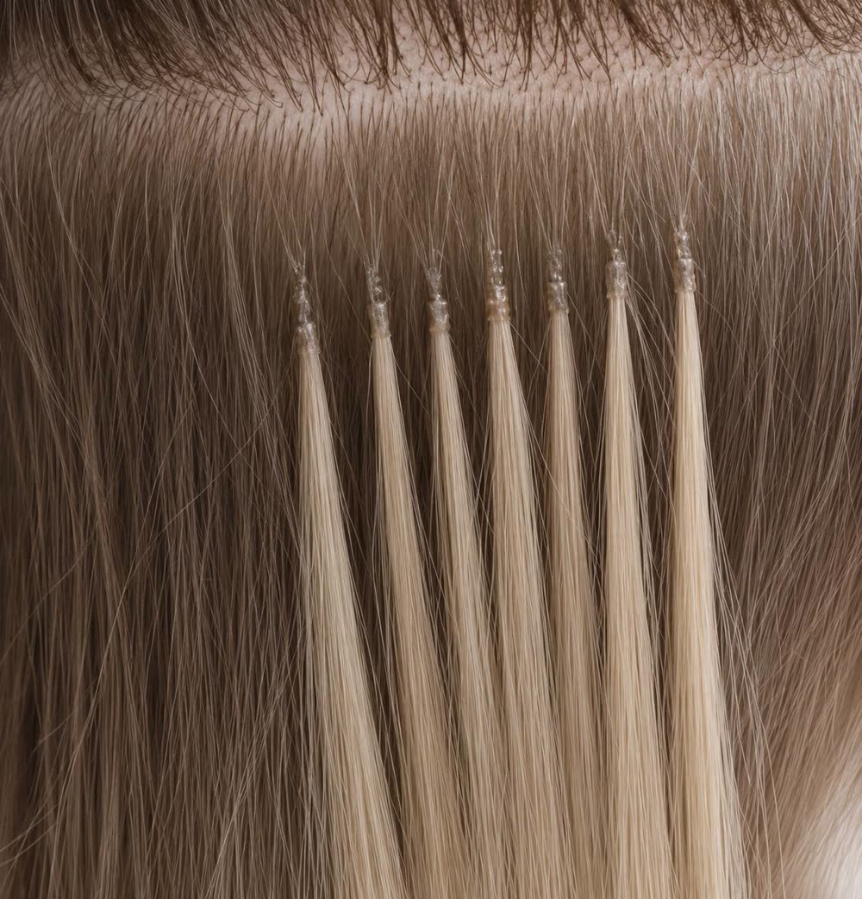
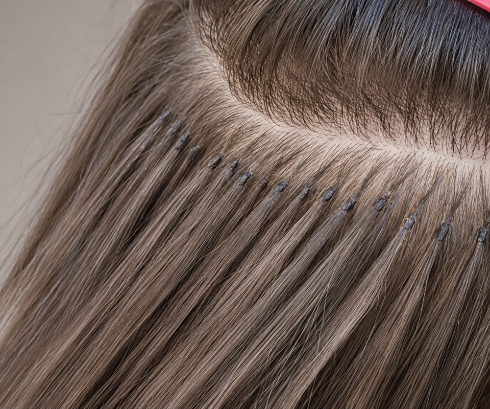
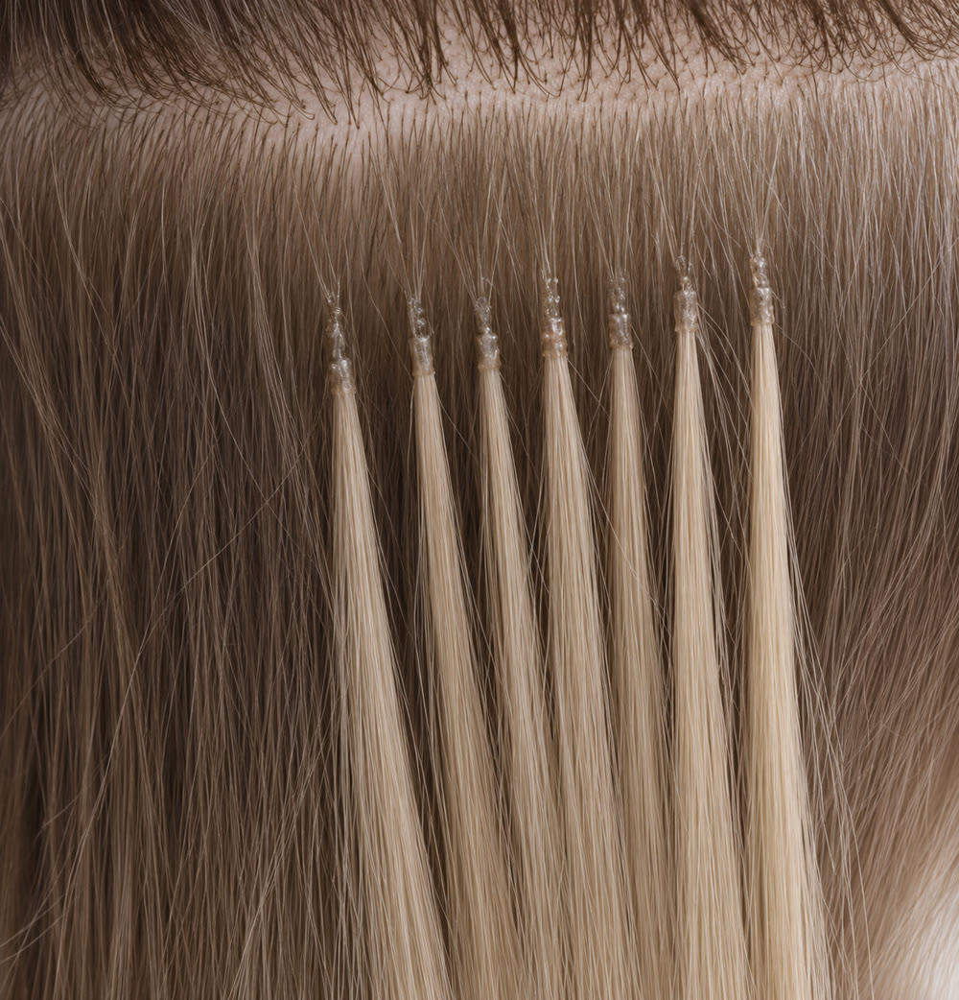
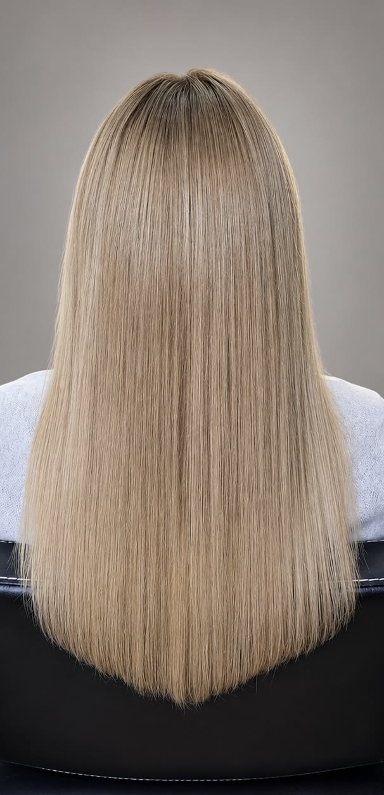

Podaljševanje las v Mariboru
Hair extensions in Maribor
Наращивание волос в Мариборе
Podaljševanje las je rešitev, ko si želite daljšo, gostejšo ali bolj polno pričesko brez čakanja, da lasje zrastejo. Delam z evro-kapsulami, ki se pripnejo na naravne lase in omogočajo naraven videz ter možnost prilagajanja oblike in barve.
Hair extensions are the answer when you want longer, thicker or fuller hair without waiting for it to grow. I work with euro-capsules, which are attached to your natural hair and allow a natural look with the option of matching shape and colour.
Наращивание волос — решение, когда хочется длиннее, гуще или объёмнее без ожидания, пока отрастут свои. Работаю с евро-капсулами: они крепятся к натуральным волосам и дают естественный вид с возможностью подобрать форму и цвет.



Kaj je evro-kapsula
What is a euro-capsule
Что такое евро-капсула
Evro-kapsula je majhen, mehak podaljšek, ki se pripne na tanko pramen naravnih las. Je diskretna, ne vleče kože in omogoča, da se lasje češejo ter oblikujejo skoraj kot običajno. Priporočam jo, kadar želite naraven prehod med svojimi in dodanimi lasmi.
A euro-capsule is a small, soft extension attached to a thin strand of natural hair. It is discreet, does not pull the scalp and allows the hair to be brushed and styled almost as usual. I recommend it when you want a natural transition between your own and the added hair.
Евро-капсула — небольшой мягкий волосок, который крепится к тонкой пряди натуральных волос. Он незаметен, не тянет кожу и позволяет расчёсывать и укладывать волосы почти как обычно. Рекомендую, когда нужен естественный переход между своими и добавленными волосами.
Kako poteka
How it works
Как проходит
Na posvetu pogledamo dolžino, gostoto in barvo vaših las ter želeni rezultat. Izberemo odtenek in količino las — pomagam pri naročanju pri dobavitelju. Na dan vgradnje lase razdelim na tanke pramene in pripnem kapsule, nato oblikujem končno dolžino in prehod. Postopek traja dlje časa, zato termin načrtujemo vnaprej.
At the consultation we look at the length, thickness and colour of your hair and at the result you want. We choose the shade and the amount of hair — I help you order from the supplier. On the day of installation I separate the hair into thin strands, attach the capsules and then shape the final length and transition. The process takes a while, so we plan the appointment in advance.
На консультации смотрим длину, густоту и цвет ваших волос и желаемый результат. Подбираем оттенок и количество волос — помогаю заказать у поставщика. В день установки разделяю волосы на тонкие пряди, креплю капсулы, затем формирую итоговую длину и переход. Процедура долгая, поэтому время планируем заранее.
Cene podaljševanja
Extension prices
Цены на наращивание
Delo pri podaljševanju — od 100 € + 1 €/kapsulo. Lasje se obračunajo posebej, pomagam pa pri naročanju pri dobavitelju, da izberete pravo kakovost in odtenek. Točen izračun pripravim po posvetu, ko vem dolžino in gostoto. Več na strani Storitve.
Extension work — from €100 + €1/capsule. Hair is charged separately; I help you order from the supplier so you get the right quality and shade. I prepare the exact quote after the consultation, once I know the length and thickness. More on the Services page.
Работа по наращиванию — от 100 € + 1 €/капсула. Волосы оплачиваются отдельно; помогаю заказать у поставщика, чтобы выбрать нужное качество и оттенок. Точный расчёт делаю после консультации, когда знаю длину и густоту. Подробнее на странице Услуги.
Nega in vzdrževanje
Care and maintenance
Уход и поддержание
Podaljške umivajte z nežnim šamponom brez sulfatov, ne z naključnimi izdelki za lase. Po umivanju jih nežno osušite in razčešite od konic navzgor. Vsakih 6–8 tednov priporočam pregled in premik kapsul, da se ohrani naravna rast in da lasje ne vlečejo. Ne uporabljajte močnih olj na kapsulah in ne spite s spetimi lasmi.
Wash the extensions with a mild sulphate-free shampoo, not with random hair products. After washing, dry them gently and comb from the ends upwards. Every 6–8 weeks I recommend a check and a capsule move to keep natural growth and avoid pulling. Do not apply strong oils to the capsules and do not sleep with tied hair.
Мойте пряди мягким шампунем без сульфатов, а не случайными средствами. После мытья аккуратно просушите и расчёсывайте от кончиков вверх. Каждые 6–8 недель рекомендую осмотр и перемещение капсул, чтобы сохранить естественный рост и избежать натяжения. Не наносите сильные масла на капсулы и не спите с завязанными волосами.
Galerija
Gallery
Галерея





Pogosta vprašanja
Frequently asked questions
Частые вопросы
Koliko časa traja vgradnja?How long does installation take?Сколько длится установка?
Odvisno od števila kapsul in dolžine — od nekaj ur do celotnega dneva. Točen čas potrdimo po posvetu, ko izberemo količino las.
It depends on the number of capsules and the length — from a few hours to a full day. We confirm the exact time after the consultation, once the amount of hair is chosen.
Зависит от количества капсул и длины — от нескольких часов до целого дня. Точное время подтверждаем после консультации, когда выбрано количество волос.
Kako dolgo zdrži?How long does it last?Сколько держится?
Ob pravilni negi in rednih pregledih kapsule zdržijo več mesecev; vsakih 6–8 tednov priporočam premik, da se ohrani naravna rast.
With proper care and regular checks the capsules last several months; I recommend a move every 6–8 weeks to keep natural growth.
При правильном уходе и регулярных осмотрах капсулы держатся несколько месяцев; каждые 6–8 недель рекомендую перемещение, чтобы сохранить естественный рост.
Ali podaljški poškodujejo moje lase?Do extensions damage my own hair?Вредят ли пряди моим волосам?
Ob pravilni vgradnji in negi ne. Pomembno je, da kapsule niso pretežke in da jih redno pregledamo — zato vgradnjo vedno načrtujemo glede na gostoto vaših las.
With correct installation and care, no. It matters that the capsules are not too heavy and that they are checked regularly — that is why we always plan the installation according to the thickness of your hair.
При правильной установке и уходе — нет. Важно, чтобы капсулы не были слишком тяжёлыми и чтобы их регулярно проверяли, поэтому установку всегда планируем под густоту ваших волос.
Rezervirajte termin v Mariboru
Book your appointment in Maribor
Запишитесь в Мариборе
Termin rezervirate na strani Rezervacija ali prek WhatsAppa.
Book on the booking page or via WhatsApp.